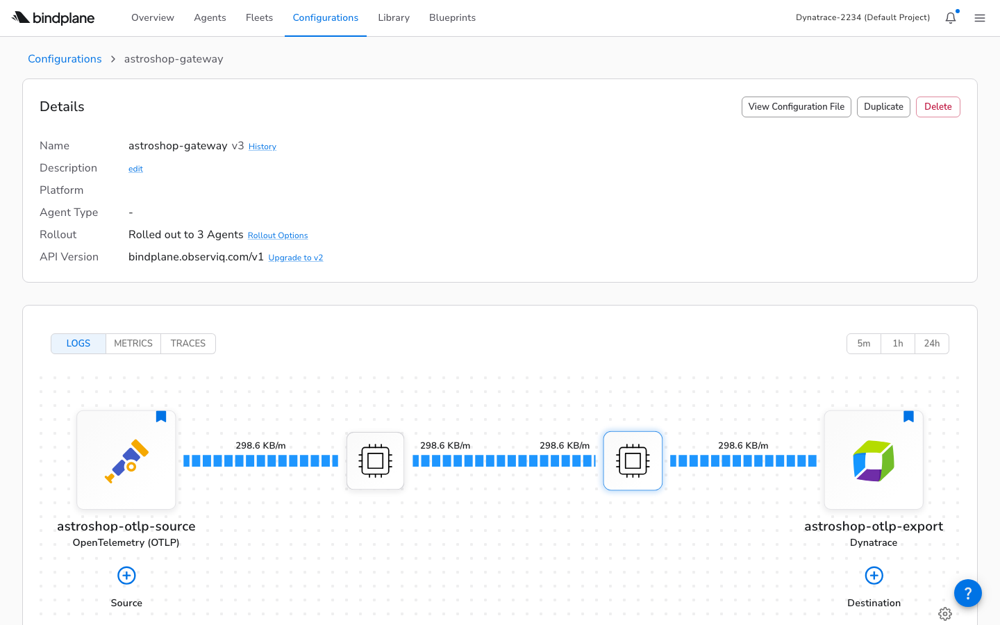
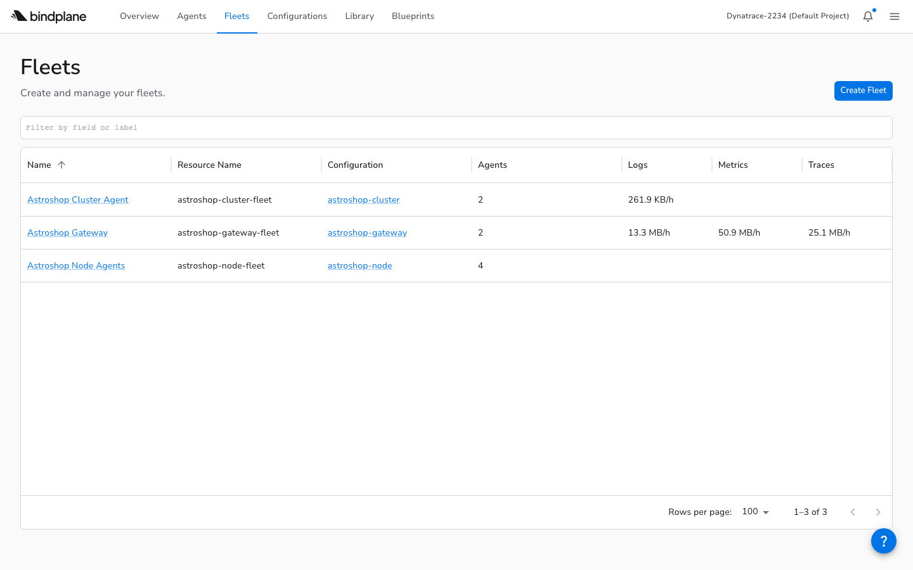
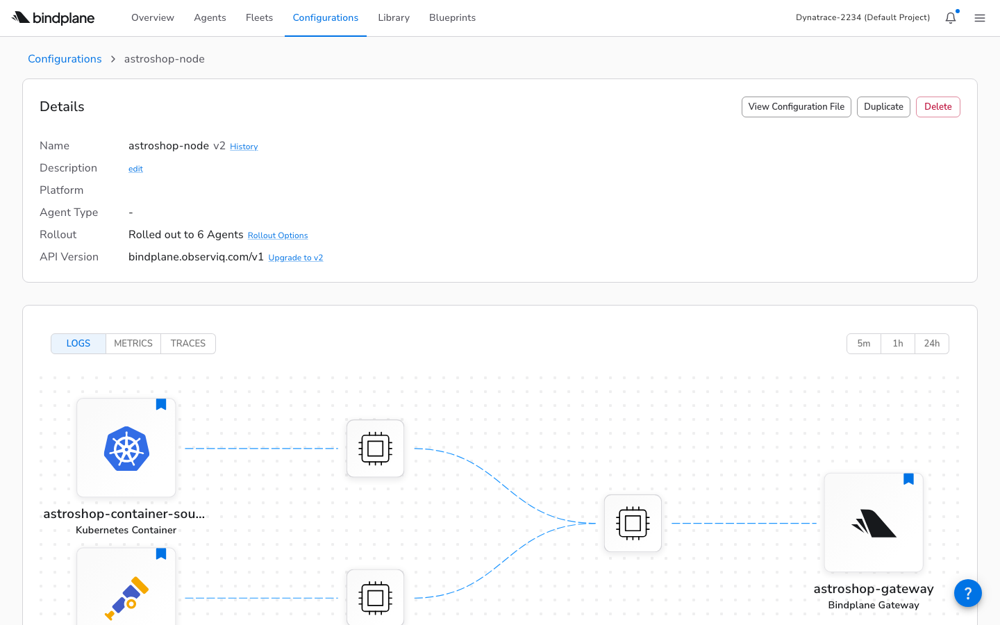
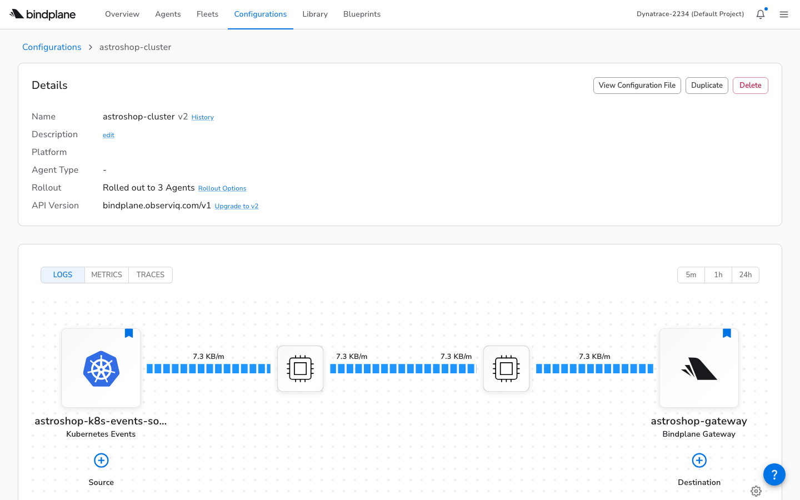
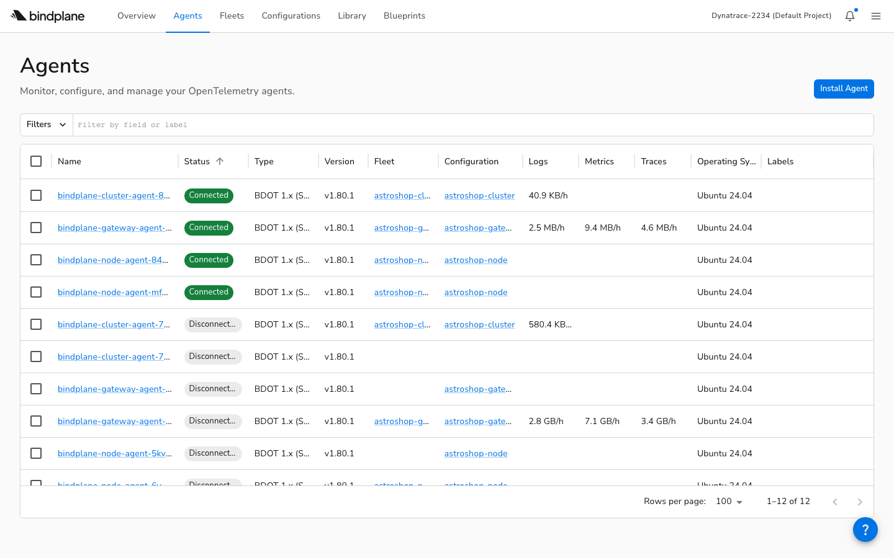

Managing OpenTelemetry Collectors — from First Principles
What Problem Does This Solve?
1. The Collector Management Problem
An OpenTelemetry Collector receives, processes, and exports telemetry. Deploying one is straightforward. Managing many is not.
Consider the Astronomy Shop, a microservice demo with a dozen services. You deploy a collector as a DaemonSet. You deploy another as a gateway. A third collects cluster metrics. Each has its own YAML config. Now you need to change the export destination from Jaeger to Dynatrace. You edit three configs, apply them, and hope nothing breaks. Next month you add a new cluster. You do it again.
The problem is not deploying collectors. It is managing their configurations across environments, over time, at scale.
2. BindPlane
BindPlane is a control plane for OpenTelemetry Collectors. Instead of editing configs on each collector, you define them once in BindPlane and it delivers them remotely. One change propagates to every collector that should receive it.
BindPlane is available as a cloud service or self-hosted. This primer uses BindPlane Cloud throughout. The collectors it manages are called agents — they are standard OTel Collectors with an added management protocol.
3. OpAMP
Agents connect to BindPlane using OpAMP (Open Agent Management Protocol), an open standard for managing collector fleets. The agent initiates an outbound WebSocket connection to BindPlane. BindPlane never reaches into your network — the agent calls home. This makes it firewall-friendly: no inbound ports, no VPN tunnels.
For BindPlane Cloud, the endpoint is:
wss://app.bindplane.com/v1/opamp
When the agent connects, it reports its labels, version, and health. BindPlane responds with the configuration the agent should run. If you change the configuration, BindPlane pushes the update over the same connection.
4. What You’ll Need
Before building, you need four things: a BindPlane account, a Kubernetes cluster, a telemetry backend, and the CLI tools to talk to all of them.
BindPlane Cloud
Sign up and generate an API key. You also need the secret key for agent authentication (find it via bindplane secret get).
Kubernetes cluster
Any cluster works. We use GKE Autopilot. You need kubectl configured to reach it.
Telemetry backend
Where your data ultimately lands. We use Dynatrace, but any OTLP-compatible backend works.
CLI tools
bindplane (install), kubectl, helm, and optionally gcloud if using GKE.
Collect your credentials into a .env file. The primer’s repository includes a template:
A source tells a collector where telemetry comes from. It is BindPlane’s abstraction over an OTel receiver. Each source has a type and parameters. You create it as a YAML resource and apply it to BindPlane.
For the Astronomy Shop, we use five source types:
otlp
Receives traces, metrics, and logs via OTLP (gRPC on 4317, HTTP on 4318)
Note: The CLI type names (k8s_container, k8s_kubelet) do not appear in the BindPlane documentation or UI. The docs use display names like “Kubernetes Container Logs.” We found the CLI names by running bindplane get source-types and matching by keyword.
6. Destinations
A destination tells a collector where telemetry goes. It is BindPlane’s abstraction over an OTel exporter. Our setup needs two, stored in separate files.
The final backend in bindplane/gateway-destination.yaml — Dynatrace, receiving traces, metrics, and logs:
Node agents and the cluster agent send telemetry to the astroshop-gateway destination. The gateway agent sends it onward to the astroshop-otlp-export destination. This fan-in pattern means only the gateway needs credentials for the external backend.
7. Configurations
A configuration wires sources to destinations for a group of agents. It is the unit of deployment in BindPlane — the thing you roll out, version, and roll back. This is bindplane/gateway-config.yaml:
The selector.matchLabels field determines which agents receive this configuration. An agent whose labels include configuration=astroshop-gateway will be matched. Note that this configuration references the source and destination by the names we defined in entries 5 and 6 — those resources must exist before this one can be applied.

Note: The Configuration YAML schema is not documented for CLI use. We discovered through trial and error that platform belongs under metadata.labels, not as a spec field; that measurementInterval only accepts 10s, 1m, 15m, or off; and that sources can be defined inline or by reference. The CLI documentation lists commands but contains no YAML examples.
8. Fleets
A fleet groups agents that share a purpose and assigns them a single configuration. Agents in a fleet all receive the same config. Our three fleets live in bindplane/fleets.yaml. Here is the gateway fleet:
The spec.configuration field links the fleet to its configuration — the one from entry 7. The selector.matchLabels determines which agents are automatically added to the fleet. This creates a chain: an agent’s labels match a fleet, the fleet assigns a configuration, and the configuration wires sources to destinations.

The Project
9. The Repository
Everything in this primer is backed by a Git repository. The files fall into three categories: BindPlane resource definitions (what to collect and where to send it), Kubernetes manifests (how to run the collectors), and operational scripts (how to deploy and tear down the whole stack).
The bindplane/ directory contains two kinds of files that look similar but serve different systems. Files like sources.yaml and gateway-config.yaml are BindPlane resources — applied via bindplane apply to the BindPlane control plane. Files like k8s-gateway-agent.yaml are Kubernetes manifests — applied via kubectl apply to the cluster. Understanding which file goes where is essential.
10. The Dependency Chain
These files cannot be applied in any order. Each resource references others by name, creating a dependency chain. If you apply a configuration before its sources exist, BindPlane rejects it. If you start a rollout before agents connect, there is nothing to roll out to.
The order is: sources and destinations first (they have no dependencies), then configurations (they reference sources and destinations by name), then fleets (they reference configurations), then Kubernetes manifests (the agents that will connect and receive configs), and finally rollouts (which push the configs to the now-connected agents).
This ordering is not enforced by the tool — you simply get errors if you try to apply things out of order. The deploy script in entry 20 codifies the correct sequence.
11. Applying Resources
The bindplaneCLI applies BindPlane resources. Authenticate with your API key, then apply files in dependency order. After each step, verify the resource exists.
At this point, BindPlane knows what to collect and where to send it. But no agents are running yet — nothing is actually collecting data. The next entries deploy the agents.
12. Rollouts
After agents connect (entries 13–15), a rollout pushes the configuration to them. Rollouts are phased: BindPlane starts with a small batch, watches for errors, and expands. If an agent rejects the config, the rollout pauses and the agent rolls back to its previous config.
$ bindplane rollout start astroshop-gateway
NAME STATUS PHASE COMPLETED ERRORS PENDING
astroshop-gateway:3 Started 1 0 0 1
$ bindplane rollout status astroshop-gateway
NAME STATUS PHASE COMPLETED ERRORS PENDING
astroshop-gateway:3 Stable 1 2 0 0
A status of Stable means every agent accepted the config. Error means at least one agent rejected it. See the rollout documentation for the full lifecycle.
Note: When a rollout fails, bindplane rollout status shows “Error” with a count but not the actual error message. The rollout docs describe error diagnosis exclusively through the UI. We had to use kubectl logs on the agent pod to find the actual config rejection reason. See entry 22 for the full debugging story.
The Three Agent Patterns
13. The Gateway Agent
The gateway agent is a Kubernetes Deployment that acts as a central routing point. It receives OTLP from the application’s OTel Collector and from other BindPlane agents, then exports everything to the backend. Only the gateway needs external credentials. Its manifest is bindplane/k8s-gateway-agent.yaml.
The key environment variables that connect the agent to BindPlane and assign it to the right fleet:
Deploy it with kubectl apply -f bindplane/k8s-gateway-agent.yaml. The agent starts, connects to BindPlane via OpAMP, and waits for its configuration. After you run bindplane rollout start astroshop-gateway, it receives the pipeline and begins collecting.
14. The Node Agent
The node agent runs as a DaemonSet — one pod per node. It collects container logs from the host and receives OTLP from application pods on the same node. It forwards everything to the gateway agent, not directly to the backend. Its manifest is bindplane/k8s-node-agent.yaml.
Key differences from the gateway:
DaemonSet
One per node, not a scalable Deployment
hostPort
Binds 4317/4318 on the host, so pods can send to NODE_IP:4317
/var/log mount
Read-only host volume for container log files
Destination
Forwards to bindplane_gateway, not dynatrace_otlp
Deploy with kubectl apply -f bindplane/k8s-node-agent.yaml, then bindplane rollout start astroshop-node.

15. The Cluster Agent
The cluster agent is a single-replica Deployment that collects cluster-wide data — Kubernetes events, cluster metrics. Only one is needed because this data is global, not per-node. Like the node agent, it forwards to the gateway. Its manifest is bindplane/k8s-cluster-agent.yaml.
Deploy with kubectl apply -f bindplane/k8s-cluster-agent.yaml, then bindplane rollout start astroshop-cluster.

16. The Full Architecture
All three agent types compose into a single architecture. Application telemetry flows through the OTel Collector and gateway to Dynatrace. Infrastructure telemetry (logs, events, metrics) flows through node and cluster agents to the same gateway. BindPlane Cloud manages all agents remotely via OpAMP.

The Kubernetes Details
17. The Init Container Pattern
The agent container runs with readOnlyRootFilesystem: true for security. But it needs writable files: a bootstrap config.yaml to start with before BindPlane sends the real config, a logging.yaml, and a manager.yaml for the OpAMP connection state. An init container writes these into an emptyDir volume.
The bootstrap config uses a nop receiver and exporter — a pipeline that does nothing. The agent starts, connects to BindPlane via OpAMP, and immediately receives its real configuration.
Note: The environment variable MANAGER_YAML_PATH is required but completely undocumented. Without it, the agent tries to write manager.yaml to its working directory, which crashes on a read-only filesystem. The fix is MANAGER_YAML_PATH=/etc/otel/storage/manager.yaml, pointing to the writable emptyDir. We found this only through the container crash log.
18. OPAMP_LABELS
When an agent connects to BindPlane, it reports its labels. These labels are how BindPlane matches the agent to a configuration and a fleet. You set them in the OPAMP_LABELS environment variable as a comma-separated list.
# In the Kubernetes manifest:
env:
- name: OPAMP_LABELS
value: "configuration=astroshop-gateway,fleet=astroshop-gateway-fleet"
The configuration= label matches the Configuration’s selector.matchLabels from entry 7. The fleet= label matches the Fleet’s selector.matchLabels from entry 8. When the agent starts, BindPlane sees both labels, assigns the agent to the fleet, and pushes the configuration — automatically, with no manual step.
Note: Fleet auto-assignment via OPAMP_LABELS is not in the fleet documentation. The docs describe three assignment methods: UI, install-time UI, and bindplane label agent CLI. The pattern of setting fleet=<name> in the Kubernetes manifest for automatic assignment at pod startup is undocumented.
19. The Manifest Gap
BindPlane manages what the collector does (its pipeline configuration). You must manage how it runs (the Kubernetes manifest) yourself. The k8s-*-agent.yaml files in our repo include:
Note: bindplane install agent supports Linux, macOS, and Windows — but not Kubernetes. The Kubernetes install docs describe a UI-only workflow where you copy generated YAML from the web interface. There is no CLI command to generate manifests. We hand-crafted all manifests using patterns from an observIQ GitHub example. The complete manifests are in our repository.
Operating the System
20. The Full Deploy Sequence
Here is the entire deployment, end to end. Every step references something from the entries above. If you have cloned the repository, filled in .env, and have a cluster ready, you can run this.
#!/usr/bin/env bash
# 1. Connect to your cluster
gcloud container clusters get-credentials $GKE_CLUSTER \
--region $GKE_REGION --project $GCP_PROJECT
# 2. Apply BindPlane resources in dependency order (entry 10)
bindplane apply -f bindplane/sources.yaml # entry 5
bindplane apply -f bindplane/gateway-destination.yaml # entry 6
bindplane apply -f bindplane/gateway-to-bindplane-destination.yaml
bindplane apply -f bindplane/gateway-config.yaml # entry 7
bindplane apply -f bindplane/node-config.yaml
bindplane apply -f bindplane/cluster-config.yaml
bindplane apply -f bindplane/fleets.yaml # entry 8
# 3. Create the Kubernetes namespace and agent secret
kubectl create namespace bindplane-agent
kubectl -n bindplane-agent create secret generic bindplane-agent-secret \
--from-literal=secret-key="$BINDPLANE_SECRET_KEY"
# 4. Deploy agents — they connect via OpAMP (entry 3)
kubectl apply -f bindplane/k8s-gateway-agent.yaml # entry 13
kubectl apply -f bindplane/k8s-node-agent.yaml # entry 14
kubectl apply -f bindplane/k8s-cluster-agent.yaml # entry 15
# 5. Deploy the application (entry 21)
helm repo add open-telemetry https://open-telemetry.github.io/opentelemetry-helm-charts
helm upgrade --install astroshop open-telemetry/opentelemetry-demo \
-f astroshop-values.yaml --namespace astroshop --create-namespace
# 6. Push configurations to connected agents (entry 12)
bindplane rollout start astroshop-gateway
bindplane rollout start astroshop-node
bindplane rollout start astroshop-cluster
# 7. Verify
bindplane get agents # should show Connected agents
kubectl get pods -n bindplane-agent # should show Running pods
kubectl get pods -n astroshop # should show the demo app
This is the same sequence used in scripts/deploy.sh and .github/workflows/deploy.yml. The workflow adds GCP authentication, Helm installation, and BindPlane CLI setup as preceding steps — see the workflow file for the complete CI/CD version.
21. The Astroshop Collector
The Astronomy Shop ships with its own OTel Collector that sends telemetry to Jaeger, Prometheus, and OpenSearch. We add a second exporter in astroshop-values.yaml that forwards a copy of everything to the BindPlane gateway agent.
The otlp/bindplane exporter uses Kubernetes service DNS to reach the gateway in the bindplane-agent namespace. Both the original exporters and the BindPlane exporter receive a copy of every signal — the application’s built-in observability continues to work alongside BindPlane.
22. Debugging a Failed Rollout
After rolling out the node configuration, we saw this:
$ bindplane rollout status astroshop-node
NAME STATUS PHASE COMPLETED ERRORS PENDING WAITING
astroshop-node:1 Error 1 0 1 0 2
One agent errored. The remaining two were held back. But what was the error? The CLI showed only the count. The docs say to click the red error text in the UI. From the terminal, we had to go to the pod logs:
$ kubectl logs -n bindplane-agent bindplane-node-agent-wblpl --tail=5
{"level":"error","caller":"observiq_client.go:398",
"msg":"Failed applying remote config",
"error":"failed to reload config: collector failed to restart:
'metrics' has invalid keys: k8s.pod.volume.usage"}
The BindPlane-generated collector config included a metric (k8s.pod.volume.usage) that agent v1.80.1 did not support. The agent rolled back gracefully to its previous config — the rollback worked perfectly. The problem was the gap between “something went wrong” and finding out what.
The fix was straightforward: remove the k8s_kubelet source from the node configuration (its metrics were incompatible with this agent version), re-apply, and re-roll out. The second rollout went to Stable with zero errors.
What We Learned
23. What Worked Well
After working through the setup friction, these aspects of BindPlane stood out:
GitOps workflow
Once you know the YAML format, bindplane apply is clean and fast. Everything is a file in a repo.
Phased rollouts
The automatic rollback on failure is a genuine safety net. Incompatible configs never stuck.
Fleet concept
Simple and intuitive. Configurations flow through fleets to agents without per-agent management.
CLI speed
bindplane get agents, rollout status — all responsive. No waiting.
Cloud OpAMP
wss://app.bindplane.com/v1/opamp just worked. No server setup, no networking headaches.
Error messages
When things failed, the messages were usually actionable. The gap is in discoverability before the error, not in the error itself.
24. Documentation Gaps
Every friction point below was verified against the official BindPlane documentation as of April 2026. These are not complaints about complexity — they are specific, actionable gaps where the docs could save the next user significant time.
Auto-assignment via OPAMP_LABELS is undocumented. Fleet docs describe UI and CLI methods only.
Broken links
Several docs URLs return 404. The site restructured paths but old links persist in search results and blog posts.
The complete setup — all YAML files, Kubernetes manifests, deploy scripts, and GitHub Actions workflow — is in our repository. Fork it to start your own BindPlane deployment.